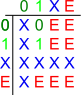

Transistor
Transistor
| Librairie: | Câblage |
| Introduction: | 2.7.0 |
| Apparence: |
 
|
Comportement
Un transistor a deux entrées, appelées gate et source , et une sortie, appelée drain . Schématisé, l'entrée source et la sortie drain sont connectées par une plaque, Logisim dessine une pointe de flèche pour indiquer la direction du flux entre l'entrée et la sortie.
| gate | gate | |||||
| source |
|
drain | source |
|
drain | |
| N-Type | P-Type |
Selon la valeur trouvée sur gate , la valeur de la source peut être transmise au drain . La détermination de la transmission ou de la déconnexion dépend du type de transistor: Un transistor de type P (indiqué par un cercle sur la ligne gate ) transmet lorsque gate est égal à 0, tandis qu'un type transistor N (qui n'a pas de tel cercle) transmet lorsque gate est 1. Le Comportement est résumé par les tableaux suivants. Notez la transmission des états Erreur et Haute impédance.
| N-TYPE | P-TYPE | |||||
|
|
|
|||||
| gate | gate | |||||
| source |

|
source |  |
| gate | drain | gate | drain | |
|---|---|---|---|---|
| 0 | X | 0 | source | |
| 1 | source | 1 | X | |
| E/X | * | E/X | * |
* Si source est Haute impédance (X), drain est Haute impédance X autrement drain est en erreur (E).
Note:Etant donné que Logisim utilise les marqueurs X (haute impédance / indéfini) et E (Erreur) j'ai utilisé les mêmes dans les illustrations plutôt que Z (haute impédance) et X (Erreur) plus communs dans d'autres documents
Si l'attribut Data Bits est supérieur à 1, l'entrée gate est toujours d'un seul bit, mais sa valeur est appliquée simultanément à chacun des bits de l'entrée source .
Un transistor de type N se comporte de manière très similaire à un buffer contrôlé . La principale différence est qu'un transistor est destiné à des conceptions de circuits plus élémentaires.
Pins
Ce composant possède trois broches, deux sont en entrée Source
et Gate
et une en sortie Drain
- source
- l'état sera transmis à la sortie si elle est déclenchée par l'entrée gate . La largeur de bit est définie par l'attribut Data Bits.
- Gate
- Cette entrée commande la transmission selon le type de transistor. Si c'est un type P la transmission est effective si l'état est bas (0). Si c'est un type N la transmission est effective si l'état est haut(1). La largeur de bite est toujours de 1
- Drain
- Cette sortie reprend l'état de l'entrée le transistor est activé par l'entrée Gate. Sinon elle est dans un état haute impédance (indéfini). Voir les figures ci-dessus pour plus de précisions
Attributs
Lorsque le composant est sélectionné ou ajouté, Alt-0 à Alt-9 modifie l'attribut Data Bits
, et les touches fléchées modifient son attribut Orientation
.
- Type
- Détermine le type de transistor : P-type ou N-type.
- Orientation
- Le côté du composant dessiné où doit se trouver sa broche de sortie Drain.
- Position Gate
- Disposition haut/gauche ou Bas/Droite de l'entrée Gate.
- Data Bits
- Largeur en bit de l'entrée Source et de la sortie Drain. L'entrée Gate a toujours une largeur de 1 bit.
Action de l'outil pousser
Aucun.
Action de l'outil text
Aucun.